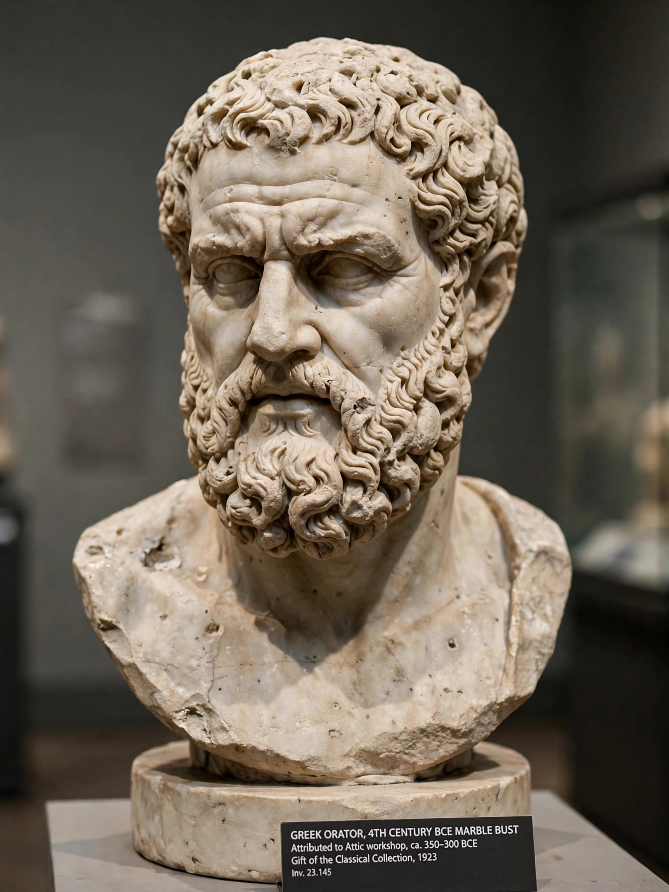

Demosthenes (384 – 12 October 322 BC) was a Greek statesman and orator of ancient Athens. His speeches constitute a significant expression of ancient Athenian intellectual prowess and provide insight into the politics and culture of ancient Greece during the 4th century BC. Demosthenes learned rhetoric by studying the speeches of previous great orators, overcame a speech impediment through rigorous training, and devoted his career to opposing the rising power of Macedon under Philip II and Alexander the Great.
| Demosthenes | |
|---|---|
 Bust of Demosthenes | |
| Born | 384 BC, Athens |
| Died | 12 October 322 BC (aged 62), Calauria |
| Occupation | Orator, statesman, logographer |
| Notable works | Philippics; On the Crown; Olynthiacs |
Orphaned at seven, Demosthenes was cheated by his guardians of his father's considerable estate; at twenty he sued them and won, recovering only a fraction. To succeed as a speaker he had to overcome a weak voice and defective articulation: according to Plutarch he trained by speaking with pebbles in his mouth, declaiming while running uphill, and practising before a mirror. He began as a logographer (speechwriter) for private litigants.
From 351 BC his Philippics and Olynthiacs warned Athens of Philip II's ambitions and urged military preparation; the word "philippic" has since come to mean any fierce denunciatory speech. He organised the alliance with Thebes that fought at Chaeronea in 338 BC, where he served as a hoplite. In 330 BC he successfully defended his career against Aeschines in the trial arising from the Crown affair, delivering On the Crown, often considered his masterpiece. Implicated in the Harpalus scandal of 324 BC, he was fined and briefly exiled.
After Alexander's death Demosthenes returned to Athens and stirred revolt in the Lamian War. When the revolt failed, the Macedonian regent Antipater demanded the orators' surrender; Demosthenes fled to the sanctuary of Poseidon on Calauria and took poison hidden in his pen rather than be captured. The Alexandrine canon ranked him among the ten Attic orators, and Cicero praised him as the perfect orator.
Aeschines · Philip II of Macedon · Battle of Chaeronea · Attic orators